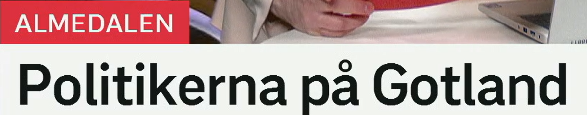
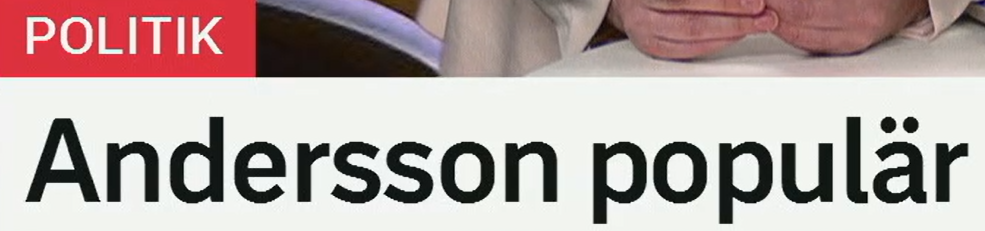
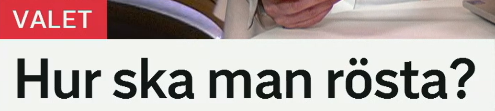
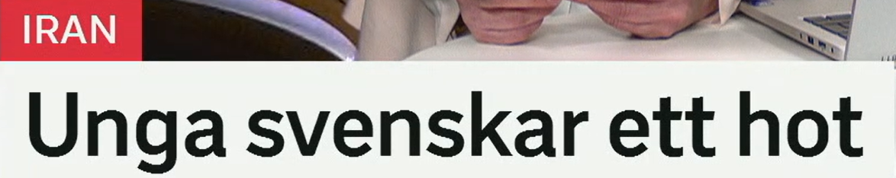
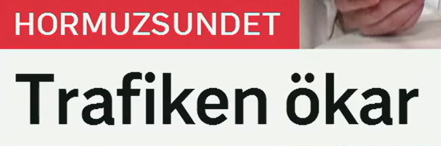

Politikerna på Gotland
在哥特兰岛上的政治家们。
1. politikerna = 这些政治家
- en politiker：一名政治家
- politiker：政治家，单复数同形
- politikerna：这些政治家，复数定形
- folkvald：民选代表，较正式
2. på Gotland
- på 常用于岛屿：på Gotland、på Island
- i 常用于国家、城市：i Sverige、i Stockholm
- på mötet：在会议上
- under Almedalen：在 Almedalen 周期间
Politikerna samlas på Gotland. 政治家们聚集在哥特兰岛。
Flera partiledare deltar i Almedalen. 多位党首参加 Almedalen 活动。
De folkvalda diskuterar vård och skola. 民选代表讨论医疗和教育。

Andersson populär
安德松受欢迎。
1. populär = 受欢迎的
- populär bland väljare：在选民中受欢迎
- omtyckt：受喜爱的，更偏个人好感
- uppskattad：受认可、受赏识
- starkt stöd：强有力的支持
2. 民调与支持
- stöd：支持
- förtroende：信任
- väljarna：选民们
- en mätning：一次调查、民调
Andersson är populär bland många väljare. 安德松在许多选民中受欢迎。
Partiet får ökat stöd i den nya mätningen. 该党在新民调中获得更多支持。
Förtroendet för ledaren är högt. 对这位领导人的信任度很高。

Hur ska man rösta?
人们应该如何投票？
1. rösta = 投票
- rösta i valet：在选举中投票
- rösta på ett parti：投票给一个政党
- lägga sin röst：投出自己的一票
- förtidsrösta：提前投票
2. Hur ska man ...?
- hur：如何、怎样
- ska：应该、将要
- man：泛指“人们、一个人”
- Hur gör man?：怎么做？
Hur ska man rösta i valet? 选举中应该怎么投票？
Du kan rösta på valdagen eller förtidsrösta. 你可以在选举日投票，也可以提前投票。
Många väljare har redan lagt sin röst. 许多选民已经投票。

Unga svenskar ett hot
年轻瑞典人被视为一个威胁。
1. unga svenskar
- ung：年轻的
- unga：年轻的，复数或定形
- en svensk：一个瑞典人
- svenskar：瑞典人，复数
2. hot = 威胁
- ett hot mot något：对某事物的威胁
- utgöra ett hot：构成威胁
- säkerhetshot：安全威胁
- risk：风险，语气比 hot 弱
Myndigheterna ser gruppen som ett hot. 当局把这个群体视为威胁。
Det kan utgöra ett hot mot säkerheten. 这可能构成安全威胁。
Risken har ökat den senaste tiden. 近期风险有所增加。

Trafiken ökar
交通量正在增加。
1. trafik = 交通、流量
- vägtrafik：道路交通
- sjötrafik：海上交通
- flygtrafik：航空交通
- trafikflöde：交通流量
2. öka = 增加
- öka snabbt：快速增加
- stiga：上升，常用于数字、价格、温度
- växa：增长，常用于问题、支持、经济
- minska：减少，反义词
Trafiken i sundet ökar igen. 海峡里的交通量再次增加。
Antalet fartyg har stigit under veckan. 本周船只数量有所上升。
Sjötrafiken minskade efter attackerna. 袭击后海上交通减少了。
今日词汇扩展表
这张表适合复习政治新闻、选举新闻和安全新闻里的高频表达。
| 标题词 | 同义词/相关词 | 高频搭配 |
|---|---|---|
| politiker | partiledare, minister, folkvald, ledamot | politikerna samlas, delta i debatt, hålla tal |
| populär | omtyckt, uppskattad, ha stöd, högt förtroende | populär bland väljare, ökat stöd, ny mätning |
| rösta | lägga sin röst, förtidsrösta, välja, rösta om | rösta i valet, rösta på ett parti, rösta om ett förslag |
| hot | risk, fara, säkerhetshot, oro | ett hot mot, utgöra ett hot, ses som ett hot |
| trafik | sjötrafik, flygtrafik, trafikflöde, fartygstrafik | trafiken ökar, trafiken minskar, stopp i trafiken |
| öka | stiga, växa, bli större, gå upp | öka snabbt, antalet stiger, stödet växer |
练习 1
把“政治家们聚集在哥特兰岛”译成瑞典语。提示：Politikerna samlas på Gotland.
练习 2
用 rösta på 写“他们投票给一个政党”。提示：De röstar på ett parti.
练习 3
用 utgöra ett hot 写“这构成安全威胁”。提示：Det utgör ett hot mot säkerheten.
练习 4
把“海上交通正在增加”译成瑞典语。提示：Sjötrafiken ökar.